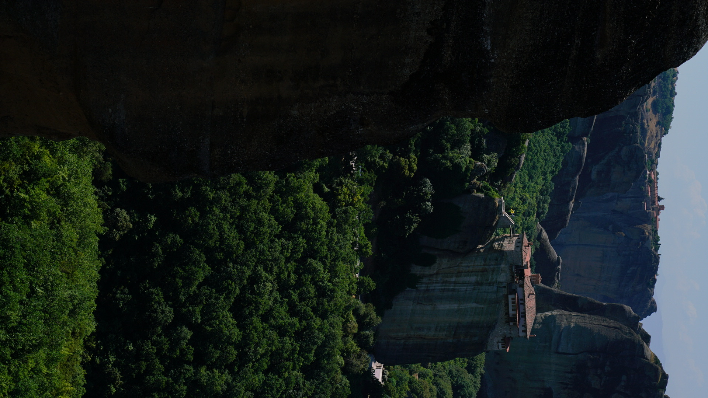
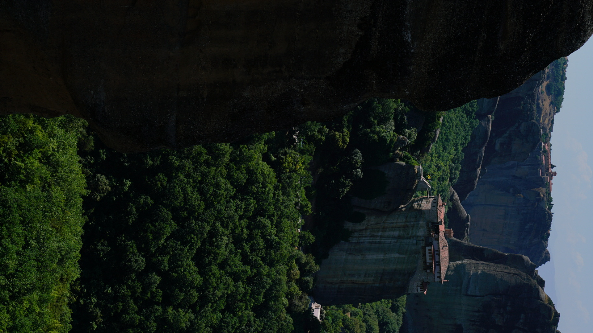

These images are taken in Hungary, Spain, Greece, Austria, Albania and Egypt.
They were taken by Sony a7rii with GM 24-70 lens.
"Fun" fact, only seven days after I bought the GM I lens, the GM II came out.
The fountain was where Sound of the Music shot scenes of Maria taking the kids out.
The Seville Cathedral photo was taken in on a Friday afternoon,
I learned that Seville people tend to take Thursday and Friday afternoons off.
I also had to get up at 3AM and head to the Temple of Abu Simbel, it was in the middle of the dessert.